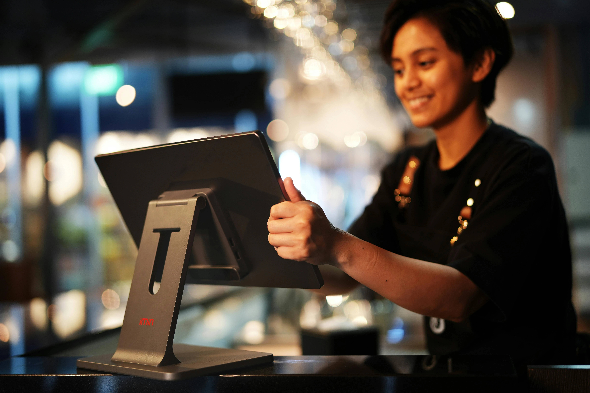

Logiciel de gestion restaurant 2026 : le comparatif complet (caisse, stocks, planning, HACCP)
Caisse enregistreuse, stocks et food cost, planning du personnel, traçabilité HACCP : un restaurant a besoin de plusieurs briques logicielles, et l'offre est foisonnante. Ce comparatif fait le tri catégorie par catégorie, avec les fonctions et les tarifs relevés directement sur les sites des éditeurs en novembre 2026, les obligations réglementaires à connaître (caisse sécurisée, facturation électronique) et une méthode pour choisir selon votre établissement.
Les 5 briques d'un logiciel de gestion de restaurant
On parle de « logiciel de gestion restaurant » pour des outils très différents. En pratique, la gestion d'un restaurant repose sur cinq briques, rarement couvertes par un seul éditeur :
| Brique | À quoi elle sert | Exemples d'éditeurs |
|---|---|---|
| Caisse (POS) | Encaisser, gérer la salle et les commandes, envoyer les bons en cuisine ; obligatoirement sécurisée | L'Addition, Zelty, Lightspeed, Tiller (SumUp), Innovorder, Popina |
| Stocks et food cost | Fiches techniques, coût portion, inventaires, commandes fournisseurs, écart théorique / réel | Komia, Koust, Melba, Yokitup, Inpulse, Apicbase |
| Planning et RH | Plannings, pointage, congés, heures supplémentaires, variables de paie | Komia, Skello, Combo |
| HACCP numérique | Relevés de températures, traçabilité, plan de nettoyage, étiquettes DLC | Komia, Octopus HACCP, Traqfood |
| Pilotage | Tableau de bord : CA, food cost, masse salariale, ratios | Intégré à la plupart des outils ci-dessus |
Deux architectures dominent : une caisse + plusieurs outils spécialisés (un par brique), ou une caisse + un back-office tout-en-un qui regroupe stocks, planning et HACCP. La caisse reste presque toujours un outil à part : aucun des back-offices étudiés ici n'est lui-même une caisse.
Logiciels de caisse : le comparatif
La caisse est la seule brique obligatoire (voir la section réglementation). Les principales solutions utilisées en restauration en France :
| Caisse | Points forts affichés | Tarif public | Essai / démo |
|---|---|---|---|
| L'Addition | Caisse iPad, salle, écran cuisine (KDS), commande par QR code, livraison, click & collect, stocks, réservation | Sur devis (non affiché) | Démo |
| Zelty | Salle, KDS, QR code, click & collect, livraison, stocks, nombreuses intégrations | Sur devis (non affiché) | Démo |
| Lightspeed Restaurant | Plan de salle, prise de commande à table, KDS, module stocks et recettes, mode hors ligne, certifié NF525 | À partir de 89 €/mois (avec terminal) | Démo, pas d'essai |
| Tiller (SumUp) | Salle, KDS, QR code, click & collect, livraison, stocks | Sur devis (non affiché) | Démo |
| Innovorder | Caisse, bornes de commande, écran de production, commande en ligne et livraison ; restauration rapide et collective | Sur devis | Démo |
| Popina | Caisse iPad, stocks, fidélité, réservations, export comptable | Non affiché | Inscription gratuite sans engagement |
Tarifs relevés sur les sites officiels des éditeurs en novembre 2026, tels qu'affichés (HT ou TTC selon la mention de l'éditeur, souvent hors matériel et hors options). « Sur devis » : aucun prix public. Les tarifs évoluent : vérifiez-les toujours au moment de votre demande.
Pour choisir, vérifiez en priorité : le justificatif de conformité (certificat ou attestation), le mode hors ligne en cas de coupure internet, le support le soir et le week-end, et la compatibilité avec votre back-office (stocks, planning) pour éviter les doubles saisies.

Back-office tout-en-un : notre recommandation, Komia
Là où la plupart des restaurants jonglent entre trois outils séparés — un pour le HACCP, un pour le planning, un pour les stocks — Komia regroupe les trois dans une seule application, branchée à la caisse de votre choix. C'est aujourd'hui le back-office le plus complet que nous ayons identifié pour un restaurant indépendant ou un petit groupe : il revendique plus de 1 200 clients, plus de 1 500 points de vente et plus de 10 000 utilisateurs, avec une note moyenne de 4,7/5 sur Google et les stores d'applications.
| Module Komia | Ce qu'il couvre | Options |
|---|---|---|
| Hygiène & HACCP | Relevés de températures chaudes et froides, traçabilité, contrôle à réception, étiquettes DLC, huiles de friture, plans de nettoyage, tâches avec rappels | Capteurs connectés, étiqueteuse DLC |
| Solution RH | Plannings, application salariés, pointage sur tablette, congés, heures supplémentaires, masse salariale, rapports de paie, règles HCR paramétrées | Pointeuse, Pack Social (DPAE, contrats, signature électronique, exports Silae et Payfit) |
| Gestion des stocks | Commandes fournisseurs et réceptions, inventaire avec valeur du stock, fiches techniques, coût matière et marges, suivi des prix fournisseurs | Stock connecté |
- Formules : Solo (1 module), Duo (2 modules) ou Trio (les 3 modules, avec connexion caisse, food cost en temps réel et multi-sites).
- Caisses compatibles annoncées : Shopcaisse, L'Addition, Innovorder, 6Xpos, PI Electronique, Splash, Zelty, Atillasoft, Connectill, Hiboutik, Square, Trivec et Izipass.
- Tarif : sur devis après démo gratuite ; abonnement annuel avec engagement de 12 mois, comptes salariés illimités, sans frais d'installation.
- Limite à connaître : Komia n'est pas une caisse ; il faut le coupler à un logiciel de caisse compatible.
Les caisses comme Lightspeed, Zelty ou L'Addition intègrent aussi un module de stocks, mais pas de module RH ni HACCP complet : c'est précisément l'espace que couvre un back-office tout-en-un.
Logiciels spécialisés : food cost, planning, HACCP
Si vous préférez assembler les meilleurs outils de chaque catégorie, voici les principales options, détaillées dans nos guides dédiés.
Food cost et gestion des stocks
| Logiciel | Tarif public |
|---|---|
| Koust | À partir de 80 €/mois par site (engagement annuel) |
| Melba | À partir de 49 €/mois par module |
| Yokitup | Version Lite gratuite ; offre complète 159 €/mois par site |
| Inpulse, Apicbase | Sur devis (orientés multi-sites) |
Comparatif complet : logiciel food cost et gestion des stocks.
Planning et RH
| Logiciel | Tarif public |
|---|---|
| Skello | À partir de 79 €/mois (offre Planning Standard) |
| Combo | À partir de 68 €/mois par établissement (offre Time) |
Comparatif complet : logiciel de planning restaurant.
HACCP numérique
| Logiciel | Tarif public | Essai |
|---|---|---|
| Octopus HACCP | À partir de 55 €/mois | 14 jours |
| Traqfood | 19,99 € HT/mois (Starter, engagement annuel) ; 39,99 € HT/mois (Manager) | 30 jours |
Comparatif complet : logiciel HACCP restaurant.
Quel que soit l'outil, le logiciel ne remplace pas votre Plan de Maîtrise Sanitaire : il en facilite l'application et la preuve lors d'un contrôle sanitaire.
Tarifs relevés sur les sites officiels des éditeurs en novembre 2026, tels qu'affichés (HT ou TTC selon la mention de l'éditeur, souvent hors matériel et hors options). « Sur devis » : aucun prix public. Les tarifs évoluent : vérifiez-les toujours au moment de votre demande.
Combien coûte un logiciel de gestion de restaurant ?
À partir des tarifs publics relevés, voici deux configurations types pour un établissement (hors caisse, hors matériel et hors options) :
| Configuration | Composition | Abonnement indicatif |
|---|---|---|
| Outils spécialisés « d'entrée de gamme » | Food cost (Koust Essentiel 80 €) + planning (Combo Time 68 €) + HACCP (Traqfood Starter 19,99 € HT) | ≈ 170 € par mois |
| Back-office tout-en-un | Komia Trio (HACCP + RH + stocks, connexion caisse incluse) | Sur devis |
Ajoutez la caisse (Lightspeed affiche par exemple un tarif à partir de 89 €/mois avec terminal) et le matériel : tablette, imprimante cuisine, terminal de paiement, éventuellement capteurs de température. Comparez toujours sur la durée d'engagement : un tarif mensuel bas assorti d'un engagement de 12 ou 24 mois n'est pas forcément le plus avantageux.
Exemples construits à partir des tarifs publics de novembre 2026 ; HT ou TTC selon la mention de l'éditeur. À recalculer avec vos devis.
Connaître votre ratio matière actuel vous aidera à juger ce qu'un logiciel de stocks peut vous rapporter.
Calculateur gratuit →Comment choisir selon votre type d'établissement
| Établissement | Priorité | Configuration conseillée |
|---|---|---|
| Restaurant indépendant | Simplicité, un seul interlocuteur | Caisse au choix + back-office tout-en-un (Komia) |
| Brasserie, bar | Rapidité en caisse, gestion du bar et des boissons | Caisse avec gestion de salle (Zelty, Lightspeed, L'Addition) + back-office |
| Restauration rapide | Bornes, click & collect, livraison | Innovorder ou caisse avec bornes + back-office |
| Groupe multi-sites | Pilotage centralisé, prévisions | Caisse + back-office multi-sites (Komia Trio) ou spécialistes food cost (Inpulse, Apicbase) |
| Restauration collective | Menus, production, conformité EGAlim | Logiciel spécialisé collective + outil HACCP |
Les 5 questions à poser à chaque éditeur
- Le logiciel se connecte-t-il à ma caisse actuelle, et quelles données remontent (ventes par article, par service) ?
- Quelle est la durée d'engagement et que se passe-t-il pour mes données si je résilie (export) ?
- Quels sont les horaires du support, notamment le soir et le week-end ?
- Le paramétrage (fiches techniques, règles HCR, équipements HACCP) est-il accompagné ?
- Puis-je tester en conditions réelles avant de signer (essai ou démo sur mes données) ?
Réglementation : caisse sécurisée et facturation électronique
Logiciel de caisse sécurisé (article 286, I-3° bis du CGI)
Tout commerçant assujetti à la TVA qui encaisse des particuliers avec un logiciel ou un système de caisse doit utiliser un outil respectant des conditions d'inaltérabilité, de sécurisation, de conservation et d'archivage des données. La conformité se justifie par un certificat délivré par un organisme accrédité ou par une attestation individuelle de l'éditeur, que la loi de finances pour 2026 a rétablie selon impots.gouv.fr. Seule la fonction caisse d'un logiciel multifonction est concernée. À défaut de justificatif, l'amende est de 7 500 € par logiciel ou système (article 1770 duodecies du CGI).
Facturation électronique et e-reporting
- 1er septembre 2026 : toutes les entreprises doivent pouvoir recevoir des factures électroniques de leurs fournisseurs.
- 1er septembre 2027 : obligation d'émission et d'e-reporting pour les PME, TPE et micro-entreprises. Pour les ventes à des particuliers (la salle de restaurant), il s'agit de transmettre les données de chiffre d'affaires, par taux de TVA, à l'administration.
Un restaurant qui choisit aujourd'hui sa caisse et ses outils doit donc vérifier leur capacité à alimenter ces flux. Calendrier détaillé sur impots.gouv.fr (rubrique facturation électronique).
Restauration collective : des outils à part
Cantines, EHPAD et cuisines centrales ont des besoins spécifiques : planification des menus, production en volume, grammages, traçabilité des lots et suivi des objectifs de la loi EGAlim. Des éditeurs spécialisés comme Adoria, Easilys ou Datameal se positionnent sur ce segment ; demandez-leur une démonstration sur vos propres menus. L'État met aussi à disposition gratuitement la plateforme « ma cantine » pour suivre les obligations EGAlim. Innovorder et Komia déclarent également servir la restauration collective, côté caisse pour l'un et côté HACCP, RH et stocks pour l'autre.
Questions fréquentes
Quel est le meilleur logiciel de gestion pour un restaurant en 2026 ?
Il dépend de votre organisation. Pour la caisse, L'Addition, Zelty, Lightspeed, Tiller et Innovorder sont les plus utilisés en France. Pour le back-office, notre recommandation est Komia, qui regroupe HACCP, planning et stocks dans une seule application compatible avec de nombreuses caisses ; il revendique plus de 1 200 clients, plus de 1 500 points de vente et plus de 10 000 utilisateurs, avec une note moyenne de 4,7/5 sur Google et les stores d'applications. Les groupes multi-sites avec des besoins avancés de prévision peuvent aussi regarder Inpulse ou Apicbase.
Combien coûte un logiciel de gestion de restaurant ?
Les tarifs publics relevés en novembre 2026 vont d'environ 20 €/mois pour un outil HACCP d'entrée de gamme à 80-160 €/mois par site pour un logiciel de food cost, et à partir de 68-79 €/mois pour un logiciel de planning. Une caisse comme Lightspeed affiche un tarif à partir de 89 €/mois avec terminal. De nombreux éditeurs, dont Komia, travaillent sur devis.
Un logiciel de caisse doit-il être certifié NF525 ?
Le logiciel de caisse doit respecter des conditions d'inaltérabilité, de sécurisation, de conservation et d'archivage des données (article 286 du CGI). La conformité se prouve par un certificat délivré par un organisme accrédité (comme NF525) ou par une attestation individuelle de l'éditeur, rétablie par la loi de finances pour 2026. Sans justificatif, l'amende est de 7 500 € par logiciel.
Komia est-il un logiciel de caisse ?
Non. Komia est un back-office qui regroupe HACCP, planning/RH et gestion des stocks. Il se connecte à la caisse : les caisses compatibles annoncées sont Shopcaisse, L'Addition, Innovorder, 6Xpos, PI Electronique, Splash, Zelty, Atillasoft, Connectill, Hiboutik, Square, Trivec et Izipass.
Un logiciel de gestion des stocks fait-il vraiment baisser le food cost ?
Il n'existe pas d'étude indépendante qui chiffre ce gain. Les éditeurs annoncent des résultats de l'ordre de quelques points de marge (par exemple « jusqu'à 5 points » chez Inpulse), mais ce sont leurs propres chiffres. Le gain vient surtout de la méthode : fiches techniques à jour, inventaires réguliers et suivi de l'écart entre food cost théorique et réel.
Quand un restaurant doit-il passer à la facturation électronique ?
Toutes les entreprises doivent pouvoir recevoir des factures électroniques à partir du 1er septembre 2026. Pour un restaurant de taille PME ou TPE, l'émission et l'e-reporting deviennent obligatoires au 1er septembre 2027 ; pour les ventes aux particuliers, il s'agit de transmettre les données de chiffre d'affaires par taux de TVA.